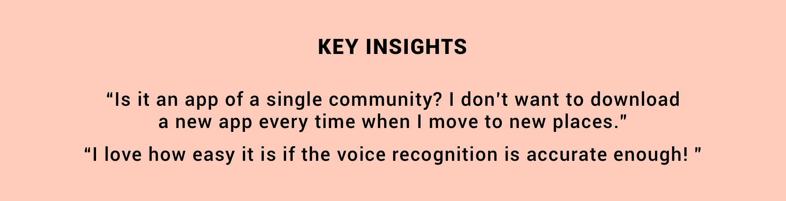
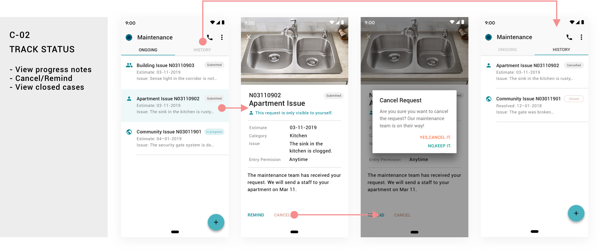

LifeMate
| Duration | Mar 2019, 5-day design challenge |
|---|---|
| Key Words | Conversational Interfaces Interaction Design Visual Design Research |
• A Small Story •
As a person who hasn't decided to settle down in one place, Charlie always signs yearly leasing contracts for apartments. He just moved into Rosemont, a community in the coveted Atlanta suburb. Apart from the great scene with a reasonable price, this community attracts him because the management team serves people super well. In the past, when he encountered amenity issues, he has experienced various kinds of “toing and froing” situations that exhausted both the leasing office and himself.
Now, he doesn't need to suffer from the inefficiencies any more! Rosemont management team has adopted a new product ———— LifeMate for every residents in the community.
I. Painless onboarding experience
On the day Charlie moves in, the leasing agent sent a LifeMate invitation link to his registered email. The link redirects him to joining the Rosemont community on Lifemate, and he only needs to confirm the email address and apartment number.
II. Smart and simple reporting process
With the chatbot, he can report issues and request maintenance without any effort. The AR mode is especially helpful when his parents come to visit him from China.

III. Integrated with Google assistant
Talk to Google assistant to report the issues. He doesn't even need to open the app! Also, it's multi-lingual now!
IV. Keep progress in control
With LifeMate, Charlie can track the progress of each request and take actions correspondingly.
• How I understood the problem •
/ Define the scope /

The process of maintenance requesting vary significantly from community to community. I started to narrow down the scope by analyzing keywords in the prompt and listing its variations. Taking reachability into consideration, I decided to focus mainly on young leasees in leasing communities. Based on my previous knowledge and some assumptions, their characteristics are:
Residents don't own the property and they turn to the leasing office for all community issues, either in public spaces or inside apartments. Also, in most cases, the service is free.
Young people's working/studying hours are generally conflicting with the management's office hours. Walk-in request seems to be difficult.
Digital system for documentation purpose is a necessity for the management team, because nobody is able to be 24-hour on call for all issues in such a big community.
Routine check and maintenance on public amenities will be conducted by the leasing office. So, in most cases, community memebers report apartment issues unless there's a serious public issue like the security gate breakdown.
/ Talk to people /
To quickly understand users' thoughts & deeds on existing solutions, I talked to 6 leasees with drafted interview questions. I tried to balance the age, gender, nationality and experience in living in leased apartments. Also, I approached 2 leasing agents for stakeholder interviews. I coded the interview notes and synthesized findings via affinity mapping.

/ Look into existing solutions /
Understanding how people get amenities repaired right now gave me a better idea on their painpoints.
Face-to-face communications: It only happens when people have time and the office is just nearby. Also, extra steps still need to be taken for documentation purpose.
Phone calls: Another way for direct conversations. It's the best for issues that need immediate actions. Otherwise people still have to wait. Both the leasing office and the community memeber will easily lose track of the information.
Email: Errr. seems like a lot of manual work.
Online portal: You cannot expect residents to keep the website in mind. Every time a person moves into a new community, she needs to learn new ways of reporting issues.
• What I found out •
/ 3 Typical user stories /
/ Who I'm designing for /
/ Identify key challenges /
To my surprise, the biggest difficulty users encounter is not how they suffer from inefficient feedback (Well, I made this assumption at the beginning), but how they give up in the first place due to the inconvenience to initiate a request.
• I started designing •
Something you may need to know before I move on to explainig my design process:
With some initial research on how machine learning and, voice recognition and language analysis has advanced nowadays, I assumed I could get all the technical resources. So I go as boldly as possible.
I assume my target users have smart phones.
I assume the community management team has a corresponding internal system and they will check and make updates in time. So I only focus on the resident-end here.
/ Sketching out ideas /
From previous research activities, I noticed how "lazy" people could be and how they regard "direct conversations" as a way to quickly get attention.
What if the system allows users to "make conversations" and type less ?
What if someone/something can help to address the issues clearly?
With such questions in mind, I started brainstorming solutions. A smart digital agent became my core design direction. My first version of design was an AR-based chatbot that could help users to identify the issues. For users who're not on spot and cannot use the AR function, I proposed to use voice assistant like Google assistant to initiate the conversation. Then I returned to the users I interviewd beforehand for feedback
/ Refining concept /
Good news! You only have to answer at most 4 questions (sometimes 3) in a few words, or maybe don't have to think about a single word but just "tap tap tap"!
After refining the user flow of the system, more importantly, designing the conversational flows, I then created a relatively comprehensive wireframe for user testing. I intentionally chose two different types of issue as examples in the prototype, so users can understand the major functionalities easily during the test.

• FINAL PROPOSAL •
- A -
CONVENIENT ACCESS TO THE SYSTEM
"Say goodbye to account & password!"
How can users get access to the reporting system conveniently? Inspired by project management service like Asana and Slack, LifeMate is a platform for any leasing real-estate corporate to create their "online communities". Residents will get an email invitation to onboard the system. No registration work is needed because your profile has already been established by the management team!
- B -
PAINLESS REPORTING EXPERIENCE
"Someone does the request for you!"
How to avoid redundant manual work when reporting problems?Users can simply talk to the agent bot to report issues. If they don't know how to address the problem in detail properly, the system will provide answers!
Thanks to the development of machine learning, AR & language analysis in voice interactions, I was able to utilize these trending technology and designed the conversational interfaces for apartment management in the future.
Although in my project scope, reporting public issues is not a necessary and frequent practice. I still consider the edge cases:
What if the community members do feel there's a necessaity to inform the management team immediately?
How to deal with repeated requests? (E.g. The corridor light breakdown will influence at least residents in the same building.)
What if I want to learn about the maintenance progress of our security gate even if I didn't submit the request myself?
As the flow B-5 suggests, the system will automatically detect if the reported case is a public issue, and will ask if the resident would make this incident visible to neighbors or the whole community. By doing this, all community members involved in the issue will receive a notification and follow up with the maintenance progress.
- C -
TRACK RESOLUTIONS
"Everything is in control!"

• EVALUATION •
I wasn't able to conduct a thorough usability testing due to the time constraints, especially for the conversational interface. However, I did asked users to quickly test on my final design. The overall feedback was quite positive.
The voice interaction is especially convenient as long as it can recognize information accurately.
They didn't understand why they need to select the visibility of public amenity maintenance requests at the beginning. But after they saw the content of such incident, they found it super helpful because they can know the progress of important issues like the gate maintenance. Also, once a person has submitted the request, other community members don't have to repetitive work. The leasing office also doesn't need to explain situations one by one.
There were two small iterations I did after conducting the evaluation session:
The instructions given at the beginning looks like asking users to send back their choices from A/B/C, but is was actually a hint that tells users three ways to start the conversation. So I rewrote the sentence.
Although users can understand what "+" button means, one said that she didn't expect to see a conversational interface afterwards. It was a little bit abrupt. Therefore, I tried to modify the icon and changed it into a small conversation bubble with an exclamation mark. It matches better to the "issue reporting" scenario.
More condensed interactions: In original design, using the AR mode to select an issue category and reporting detailed problem were two separate steps. It affects the coherency. See how I modified it:
• REFLECTIONS •
I still remember when I approached the first user, he didn't think there was any big deal in issue reporting situations. "Why do you choose to solve such a boring problem? I don't think there's any better way than filling out an online form or directly making phone calls." He asked. To be honest, I felt discouraged at the moment, doubting myself if I could actually make something creative and useful in the end. But I didn't give up. After I showed him my final crafts, he was convinced that a product like LifeMate would definitely make his life easier.
For designers, there's never a "boring" issue. It's important to dive deeply into the context and dig out insights. I really enjoyed doing this design challenge because:
I managed to narrow down the scope quickly and pushed myself to move forward.
I pulled myself out of the comfort zone and took on the actual "design challenge" I've never faced before: To design a conversational interface.
Of course, due to the time and resource constraints, my final deliverables are still far away from "final" if it is a real product. Future steps:
It was a pity that I didn't have enough time to make an interactive prototype for the conversations. I only used pre-defined sentences and phrases to showcase the concept. If I have time, I would really love to see how users will speak to the system in the their language habits.
I mainly focused on the resident-end this time. However, I know a good service can never take place without the support of service providers/stakeholders. In my scope, that should be the leasing office. I would like to show the design to the maintenance team to see if the information involved is enough. Also, I am passionate about creating the corresponding back-end platform for the management team.
In the future, I hope I can look into how this system can be adapted for people with disabilities.